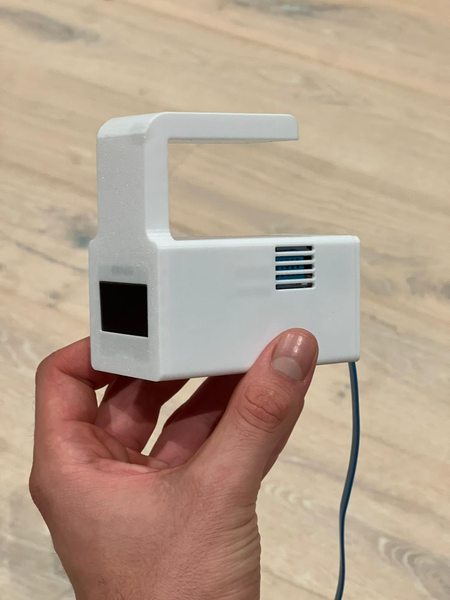
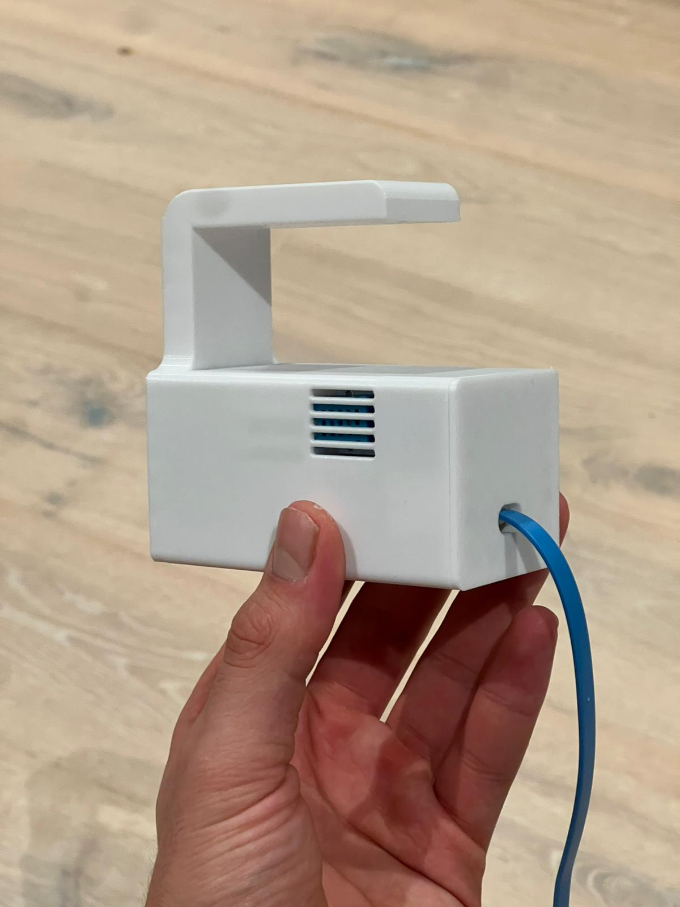
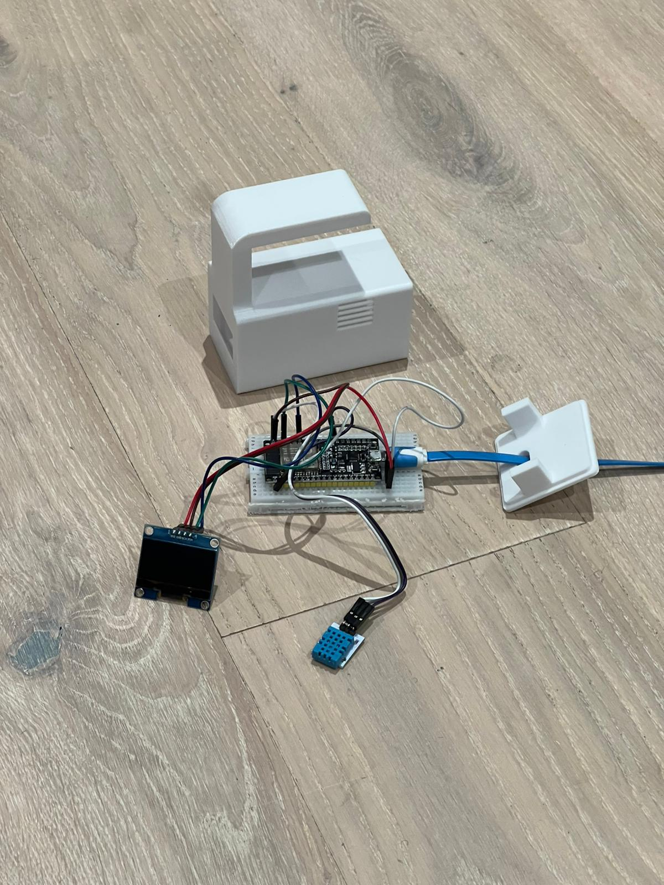
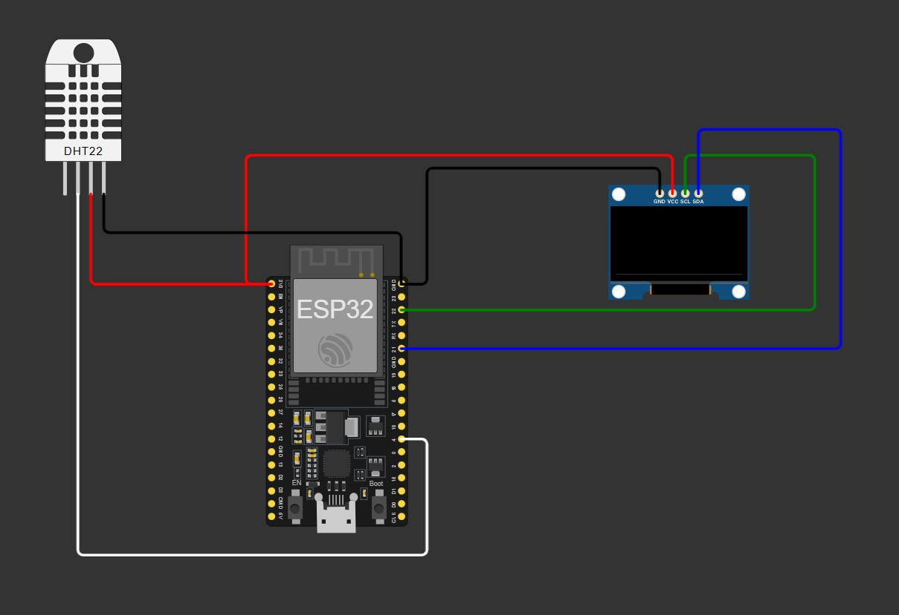

3D Model (rotate me)
Photo & Video Gallery



Wiring
Code
Arduino Code
Apri file// Caricamento...Piccola stazione meteo basata su ESP32, capace di misurare temperatura e umidità tramite sensore DHT22 e mostrare i dati su un display OLED. Il tutto è racchiuso in un case progettato su SolidWorks e stampato in 3D, con prese d’aria per una lettura accurata.
// Caricamento...